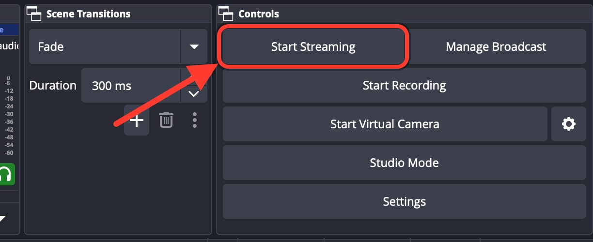
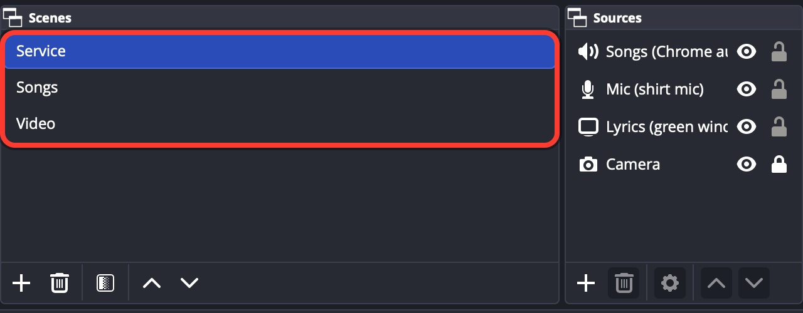
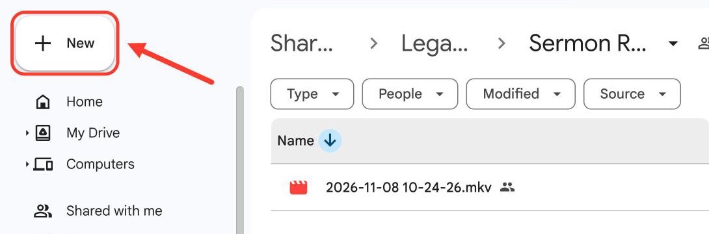

Sunday Rotation
Stream
Legacy Bible Church
Sunday morning
1
Livestream Checklist.
Open the checklist →
2
Click
Start Streaming
before the countdown ends.

Open Run the stream →
3
Switch scenes. Service. Songs. Video.

After the service
4
Click
Stop Streaming
. Upload the recording to Sermon Recordings.

Open Sermon Recordings →
Resources
Livestream Checklist
→
Run the stream
→
Sermon Recordings
→
Sunday Rotation
→